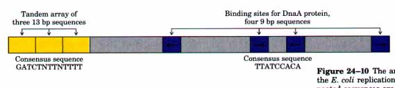
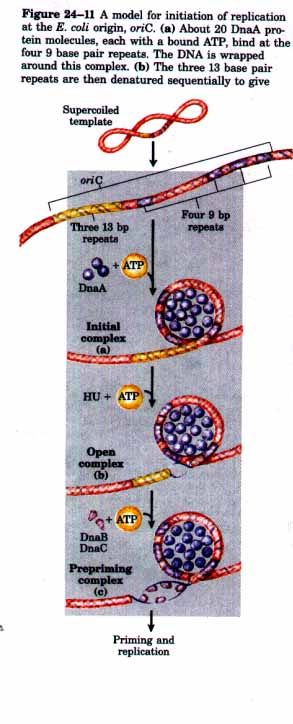
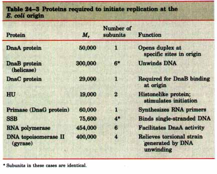
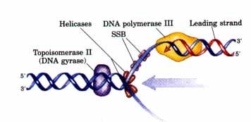
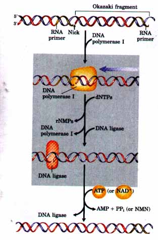
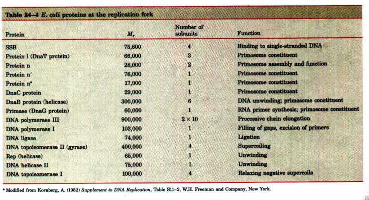
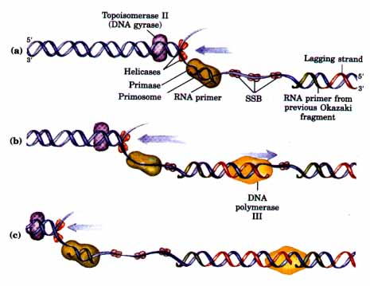
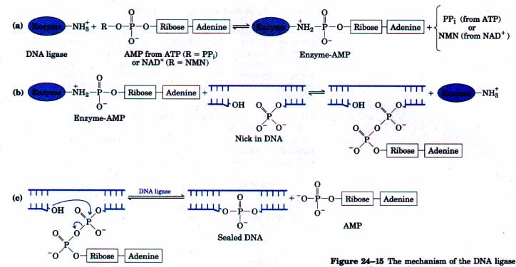
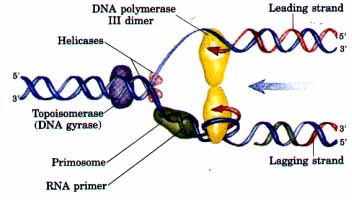

The synthesis of a DNA molecule can be divided into three stages: initiation, elongation, and termination. These are distinguished by dif ferences in the reactions taking place and in the enzymes required. In the next two chapters we will see that the synthesis of the other major biological polymers, RNAs and proteins, can be similarly broken down into the same three stages, each with unique characteristics. The events described below reflect information derived from in vitro experiments using purified E. coli proteins.
Initiation The E. coli replication origin, called oriC, consists of 245 base pairs, many of which are highly conserved among bacteria. The general arrangement of the conserved sequences is illustrated in Figure 24-10. The key sequences for this discussion are two series of short repeats; three repeats of a 13 base pair sequence and four repeats of a 9 base pair sequence.

Figure 24-10 The arrangement of sequences in the E. coli replication origin, called oriC. The repeated sequences are shaded in color. The term "consensus sequence" is used to describe a repeated sequence that varies somewhat from one copy to the next; it depicts the most common nucleotide residues found at each position in the sequence (N represents any of the four nucleotides). Individual copies of the repeated sequence may differ from the consensus at one or several positions. The arrows indicate the orientations of the nucleotide sequences.
| At least eight different enzymes or proteins (summarized in Table 24-3) participate in the initiation phase of replication. They open the DNA helix at the origin and establish a prepriming complex that sets the stage for subsequent reactions. The key component in the initiation process is the DnaA protein (Fig. 24-11). A complex of about 20 DnaA protein molecules binds to the four 9 base pair repeats in the origin. In a reaction that requires ATP and is facilitated by the bacterial histonelike protein HU, the DnaA protein recognizes and successively denatures the DNA in the region of the three 13 base pair repeats, which are rich in A=T pairs. The DnaB protein then binds to this region in a reaction that requires the DnaC protein. The DnaB protein is a helicase that unwinds the DNA bidirectionally, creating two potential replication forks. If the E. coli single-strand DNA-binding protein (SSB) and DNA gyrase (DNA topoisomerase II) are added to this reaction in vitro, thousands of base pairs are rapidly unwound by the DnaB helicase, proceeding out from the origin. Multiple molecules of SSB bind cooperatively to single-stranded DNA, stabilizing the separated DNA strands and preventing renaturation. Gyrase relieves the topological stress created by the DnaB helicase reaction. When additional replication proteins are added as described below, the DNA unwinding mediated by DnaB protein is coupled to replication. |  |
DNA replication must be precisely regulated so that it occurs once and only once in each cell cycle. Initiation is the only phase of replication that is regulated, but the mechanism is not yet well understood. Biochemical studies have provided a few insights. The DnaA protein hydrolyzes its tightly bound ATP slowly (about 1 hour) to form an inactive DnaA-ADP complex. Reactivating this complex (replacing ADP with ATP) is facilitated by an interaction between DnaA protein and acidic phospholipids in the bacterial plasma membrane. Initiation at inappropriate times is prevented by the presence of the inactive DnaAADP complex, by the binding of a protein called IciA (inhibitor of chromosomal initiation) to the 13 base pair repeats, and perhaps by other factors. Deciphering the complex interactions in this regulatory network remains an active area of research.

Elongation The elongation phase of replication consists of two seemingly similar operations that are mechanistically quite distinct: leading strand synthesis and lagging strand synthesis. Several enzymes at the replication fork are important to the synthesis of both strands. DNA helicases unwind the parental DNA. DNA topoisomerases relieve the topological stress induced by the helicases, and SSB stabilizes the separated strands. In other respects, synthesis of DNA in the two strands is sharply different. We will begin with leading strand synthesis, the more straightforward of the two. |
 Figure 24-12 Synthesis of the leading strand. DNA polymerase III keeps pace with the replication fork. Helicases separate the two DNA strands at the fork, molecules of SSB bind to and stabilize the separated strands, and DNA topoisomerase II acts to relieve torsional stress generated by the helicases. |
Leading strand synthesis begins with the synthesis by primase of a short (10 to 60 nucleotide) RNA primer at the replication origin. Deoxyribonucleotides are then added to this primer by DNA polymerase III. Once begun, leading strand synthesis proceeds continuously, keeping pace with the replication fork (Fig. 24-12).
Lagging strand synthesis, which must be accomplished in short fragments (Okazaki fragments) synthesized in the direction opposite to fork movement, is a more intricate problem. It is solved by a protein machine that incorporates several specialized proteins in addition to polymerase III. Each fragment must have its own RNA primer, synthesized by primase, and positioning of the primers must be controlled and coordinated with fork movement. The regulatory apparatus for lagging strand synthesis is a traveling protein machine called a primosome, which consists of seven different proteins including the DnaB protein, DnaC protein, and primase mentioned above (Table 24-4). The primosome moves along the lagging strand template in the 5'→3' direction, keeping pace with the replication fork. As it moves, the primosome at intervals compels primase to synthesize a short (10 to 60) residue RNA primer to which DNA is then added by DNA polymerase III (Fig. 24-13). Note that the direction of the synthetic reactions of primase and polymerase III is opposite to the direction of primosome movement. When the new Okazaki fragment is complete, the RNA primer is removed by DNA polymerase I (using its 5'→3' exonuclease activity) and is replaced with DNA by the same enzyme. The remaining nick is sealed by DNA ligase (Fig. 24-14). The proteins acting at the replication fork are summarized in Table 24-4. |
 Figure 24-14 Removal of RNA primers in the lagging strand. The RNA primer is removed by the 5'→3' exonuclease activity of DNA polymerase I, and it is replaced with DNA by the same enzyme. The remaining nick is sealed by DNA ligase. The role of NAD+ is shown in Fig. 24-15. |


Figure 24-13 Synthesis of Okazaki fragments. The multiprotein primosome complex travels in the same direction as the replication fork. (a) At intervals, primase synthesizes an RNA primer for a new Okazaki fragment. Note that this synthesis formally proceeds in the direction opposite to fork movement. (b) Each primer is extended by DNA polymerase III. (c) DNA synthesis continues until the primer of the previously added Okazaki fragment is encountered. (Helicases, DNA topoisomerase II, and SSB have the functions outlined in Fig. 24-12.)
DNA ligase catalyzes the formation of a phosphodiester bond between a 3' hydroxyl at the end of one DNA strand and a 5' phosphate at the end of another strand. In E. coli the phosphate must be activated using NAD+ (ATP is used in some organisms) to supply the required chemical energy. The reaction pathway, as established by I. Robert Lehman and colleagues, is shown in Figure 24-15. The use by the ligase of E. coli of the nucleotide NAD+--a cofactor that normally functions in hydride transfer reactions (see Fig. 13-16)-as the source of the AMP activating group is unusual. DNA ligase is another enzyme of DNA metabolism that has become an important reagent in recombinant DNA experiments (Chapter 28).

Fignre 24-15 The mechanism of the DNA ligase reaction. There are three steps, and in each step one phosphodiester bond is formed at the expense of another. Steps (a) and (b) lead to activation of the 5' phosphate in the nick. An AMP group is transferred first to a Lys residue on the enzyme and then to the 5' phosphate in the nick. (c) The 3'-OH group then attacks this phosphate and displaces AMP, leading to the formation of a phosphodiester bond to seal the nick. The AMP is derived from NAD+ in the case of E. coli DNA ligase. The DNA ligases isolated from a number of other prakaryotic and eukaryotic sources use ATP rather than NAD+, and release pyrophosphate rather than nicotinamide mononucleotide (NMN) in step (a).
In E. coli, synthesis of the leading and lagging strands may actually be coupled as shown in Figure 24-16. This can be accomplished by looping the lagging strand template so that synthesis can be carried out concurrently on both strands by a single dimeric polymerase III acting in concert with the primosome and all of the other proteins at the replication fork (Table 24-4). Termination Eventually, the two replication forks meet at the other side of the circular E. coli chromosome. Very little is known about this stage of the reaction, though the action of a type 2 topoisomerase called DNA topoisomerase IV appears to be necessary for final separation of the two completed circular DNA molecules. Nor is much understood about the process of partitioning the two DNA molecules into daughter cells at division. |
 Fignre 24-16 Coupling the synthesis of leading and lagging strands with a dimeric DNA polymerase III. The template for the lagging strand is looped tightly so that the direction of synthesis has the same orientation for both strands. As polymerization proceeds, the loop grows until the previous Okazaki fragment is encountered. Here, the polymerase synthesizing the lagging strand must dissociate and reinitiate at a new primer and with a new tight loop. This must be coordinated to keep pace with that part of the polymerase synthesizing the leading strand. |
The DNA molecules in eukaryotic cells are considerably larger than those in bacteria and are organized into complex nucleoprotein structures (chromatin) (Chapter 23). The essential features of DNA replication are the same in eukaryotes and prokaryotes. However, some interesting variations on the general principles discussed above promise new insights into the regulation of replication and its link with the cell cycle.
Origins of replication, called autonomously replicating sequences (ARS), have been identified and studied in yeast. ARS elements span regions of about 300 base pairs and contain several conserved sequences that are essential for ARS function. There are about 400 ARS elements in yeast, with most chromosomes having several. Proteins that specifically bind the ARS region have been identified in yeast, although their functions are not yet understood.
The rate of replication fork movement in eukaryotes (~50 nucleatides/s) is only one-tenth that observed in E. coli. At this rate, replication of an average human chromosome proceeding from a single origin would take more than 500 hours. Instead, replication of human chromosomes proceeds bidirectionally from multiple origins spaced 30,000 to 300,000 base pairs apart. With the exception of the ARS elements of yeast, the structure of the origins of replication in eukaryotes is not known. Because eukaryutic chromosomes are almost uniformly much larger than bacterial chromosomes, the presence of multiple origins on a eukaryotic chromosome is probably a general rule.
As in bacteria, there are several types of DNA polymerases in eukaryotic cells. Some have been linked to special functions such as the replication of the DNA in mitochondria. The replication of nuclear chromosomes involves an enzyme called DNA polymerase α, in association with another polymerase called DNA polymerase δ. DNA polymerase α is typically a four-subunit enzyme with similar structure and properties in all eukaryotic cells. One of the subunits has a primase activity. The largest subunit (Mr ~ 180,000) contains the polymerization activity. DNA polymerase δ has two subunits. This enzyme exhibits a very interesting association with and stimulation by a protein called proliferating cell nuclear antigen (PCNA; Mr 29,000) found in large amounts in the nuclei of proliferating cells. The PCNA from yeast will function with DNA polymerase δ from calf thymus, and the calf thymus PCNA with yeast DNA polymerase δ, suggesting a conservation of the structure and function of these key components of the cell division apparatus in all eukaryotic cells. PCNA appears to have a function analogous to the β subunit of E. coli DNA polymerase III (see Fig. 24-7), forming a circular clamp that greatly enhances the processivity of DNA polymerase δ.
DNA polymerase δ, which has a 3'→5' proofreading exonuclease activity, appears to carry out leading strand synthesis. DNA polymerase a has a relatively low processivity, and with its associated primase it may carry out lagging strand synthesis as part of a eukaryotic replisome. Another polymerase called DNA polymerase ∈, may replace DNA polymerase δ in some situations, such as in DNA repair.
Two other protein complexes, called RFA and RFC (RF stands for replication factor), have been implicated in eukaryotic DNA replication. Both have been found in organisms ranging from yeast to mammals. RFA is a eukaryotic single-stranded DNA-binding protein, with a function equivalent to the E. coli SSB protein. RFC appears to facilitate the assembly of active replication complexes.